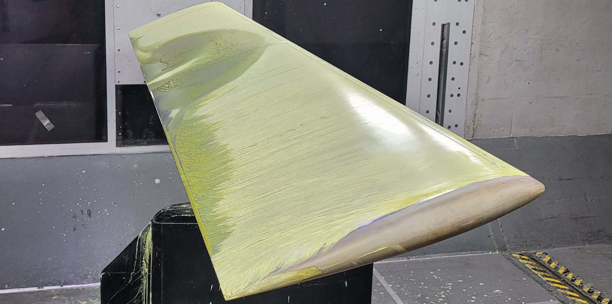

Aerospace Laboratory I: Finite Wing Analysis in the Kirsten Wind Tunnel (KWT)

Summary:
The experiment investigates propeller geometry and pitch influence on performance metrics. It compares four propellers in a 3x3 wind tunnel and discusses limitations.
1. Finite Wings Report: Here
Abstract:
- - Explored propeller geometry and pitch influence on performance metrics.
- - Found performance metrics depend on propeller geometry and advance ratio.
- - Highlighted the need for further analysis on propeller design optimization.
Introduction:
- - Objective: Measure propeller performance and evaluate pitch influence.
- - Utilized advanced equipment and a 3’x3’ wind tunnel for controlled airflow.
- - Experiment involved testing two propeller models at different pressure values.
Theory:
- - Propeller power, efficiency, thrust, and torque equations were explored.
- - Discussed propeller advance ratio and its impact on efficiency and thrust.
- - Formulas for thrust and torque coefficients were provided.
Methods and Procedure:
- - Experiment conducted in a 3x3 wind tunnel using various equipment.
- - Data collected included RPM, indicated pressure, drag, torque, and temperature.
- - Propellers tested at different indicated pressures and RPM ranges.
Results and Discussion:
- - Thrust trends deviated from expectations, possibly due to data inaccuracies.
- - Efficiency and torque data showed unexpected patterns, requiring further investigation.
- - Limitations of the experiment, including potentiometer and propeller dimensions, were discussed.

Conclusion:
- - Results were unexpected, possibly due to limitations in experimental setup.
- - Suggested improvements include digital motor speed control and consistent propeller dimensions.
- - Highlighted the need for future experiments to isolate propeller geometry and pitch effects.